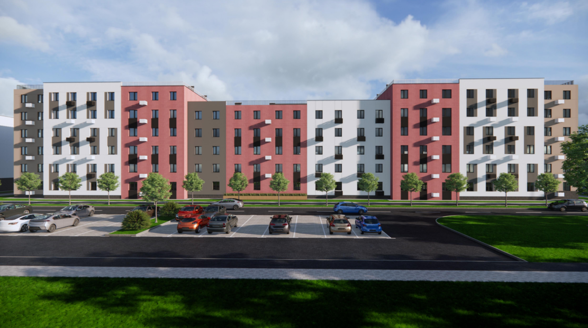
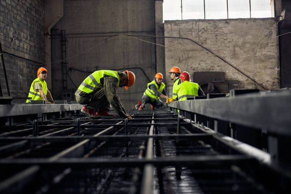

Попри воєнні дії на Черкащині будують завод із виготовлення круп
Проектно-будівельна компанія "ПБК-Агропроект" - високотехнологічна компанія, що має динамічний розвиток та багаторічний досвід роботи на ринку проектно-дослідницьких і будівельних робіт на об’єктах сільськогосподарського, промислового і цивільного призначення. "ПБК-Агропроект" - це сучасні технології проектування і будівництва, що дозволяють мінімізувати витрати замовника. Сучасне програмне забезпечення, висока якість розрахунків, гнучкість проектних рішень дає можливість оптимально адаптувати результати робіт під потреби замовника.Останнім часом компанія "ПБК-Агропроект" розширила свої можливості наданням своїм замовникам і партнерам комплексних рішень під ключ. Від ескізу і пошуку земельної ділянки, проектування заводу або комплексу, до його будівництва і авторського нагляду.

Черкаська компанія розробила унікальну концепцію будівництва житла для вимушених переселенців
За словами представників підприємства, замовники розглянули пропозиції семи компаній, серед яких концепція «Агропроекту» найбільше відповідала вимогам. Згідно проекту, житловий комплекс має поверховість від п’яти до шести поверхів, у якому може розміститись орієнтовно 1640 мешканців. Площі приміщень відповідають вимогам чинного законодавства. Крім того, у проекті врахована ініціатива президента України Володимира Зеленського – житло оснащене надійним укриттям із розосередженими виходами назовні. Враховані можливості для маломобільних груп населення, зокрема, в укриття можна спускатися ліфтом. Підземний поверх також включає в себе санітарно-побутові приміщення, кімнати для розташування триярусних ліжок та інше.

В допомогу виробникам: будівництво багатофункціональних ангарів налагодив черкаський забудовник
Універсальне рішення для будь-якої галузі промисловості. Черкаська проектно-будівельна компанія «Агропроект» запустила проектування та будівництво багатофункціональних ангарів із збірного залізобетону. Особливість спеціальної моделі ангарів – це висока якість, довговічність та швидкість монтажу. Про це інформують на сторінці компанії у Facebook. Спеціалісти компанії переконані, що завдяки своїй зручності та універсальності така модель користується найбільшим попитом серед виробників і бізнесу, особливо в умовах сьогодення, коли необхідно заощаджувати час та кошти. Технологію будівництва пояснив директор компанії ПБК-«СтройТрейд» Олександр Походенко: "Ідею створення такого ангару ми запозичили ще з радянських часів, але модернізували і удосконалили. Металеві конструкції замінили на конструкції із збірного залізобетону. Так, ангар із збірного залізобетону складається із фундаментних стаканів, куди встановлюються напіврами – конструкції із збірного залізобетону, які мають форму, що нагадує хокейну ключку. Ширина ангару – 21 м, довжина може бути будь-якою, залежно від потреб замовника. Втім, за необхідності, можемо зібрати об’єкт і з інших залізобетонних конструкцій". За словами Олександра Походенка, ангар належить до капітального будівництва. Один квадратний метр об’єкту коштує від 3000 гривень. У вартість входить виготовлення конструкцій із збірного залізобетону (фундаментні стакани, каркас залізобетонний, стінові панелі, плити перекриття) їх зборка/монтаж та утеплення стін. Визначення вартості фундаментів можливе після виконання геології ґрунту.
контакти
Приймальня
Україна, м. Черкаси, вул. Смілянська, 118
Юридична адреса
Україна, м.Черкаси, бул.Шевченка, 266/1
pokhodenko@protonmail.com
+38 068 690 72 64